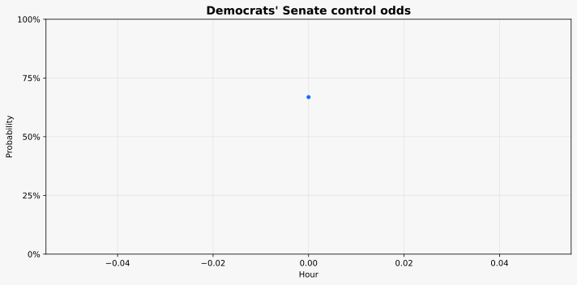

This publication updates once per hour. Each refresh captures the latest available market prices and recalculates the overall Democratic Senate control probability across the current state-by-state market set.
The underlying data comes from Polymarket, where the relevant Senate probability contracts trade in real time. It is a market-implied signal rather than a polling model or a campaign-based forecast.
This tracker aggregates the active Polymarket Senate race contracts for the most competitive states and calculates the simple average Democratic win probability across the set. Each state market contributes its current market-implied probability, and the combined total is used as a real-time indicator of the probability that Democrats hold Senate control.

| State | Probability |
|---|---|
| Alaska | 51.0% |
| Georgia | 92.0% |
| Maine | 69.5% |
| Michigan | 60.5% |
| North Carolina | 91.0% |
| Ohio | 52.5% |
| Texas | 51.5% |